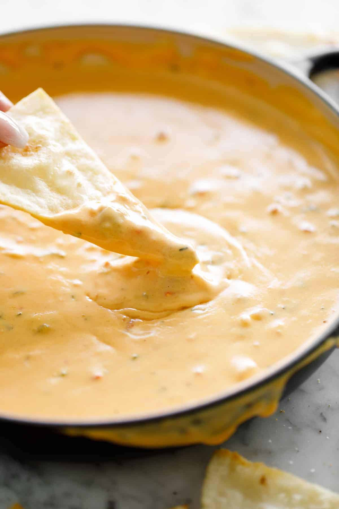

Queso (Mexican cheese dip)

Luxuriously smooth queso made with real cheese.
Flavor packed with onion, garlic, jalapeños, tomatoes, cilantro and spices. All mixed into Velveeta.
Ingredients
- 1/2 pound 225 g fresh Cheddar cheese, shredded (smoked, sharp or American cheddar)
- 1 tablespoon butter
- 3/4 cup green onions, finely chopped
- 2 large cloves garlic minced
- 3.5 oz (100 g) diced tomatoes, (Roma, grape or cherry tomatoes)
- 1/2 teaspoon each ground cumin and onion powder
- 1/2 teaspoon cayenne pepper, (add more to taste if desired)
- 1 tablespoon cornstarch cornflour
- 13 oz (375 g) evaporated milk, (full fat)
- 4 oz 120 g fire roasted green chiles, (or jalapeños)
- 1/4 cup fresh cilantro, finely chopped
Directions
- Melt butter in a medium-sized pot over medium-heat. Sauté the green onions (white parts only) for 4 minutes, until soft. Then add the garlic and sauté until fragrant, about 30 seconds.
- Add the tomatoes in with juices with the chiles, cumin, onion powder and cayenne pepper. Cook while stirring occasionally, for 2 minutes until soft and fragrant.
- Mix cornstarch into the pot, then pour in the evaporated milk, stirring well to combine.
- Bring to a boil, then add the cheese, mixing well. Cook, while stirring, until cheese just melts through the milk and transforms into a smooth sauce. Take off heat immediately.
- Stir in cilantro, green onions (reserved green parts) and season with salt to taste if needed. Mix well.
Serve warm.
Home